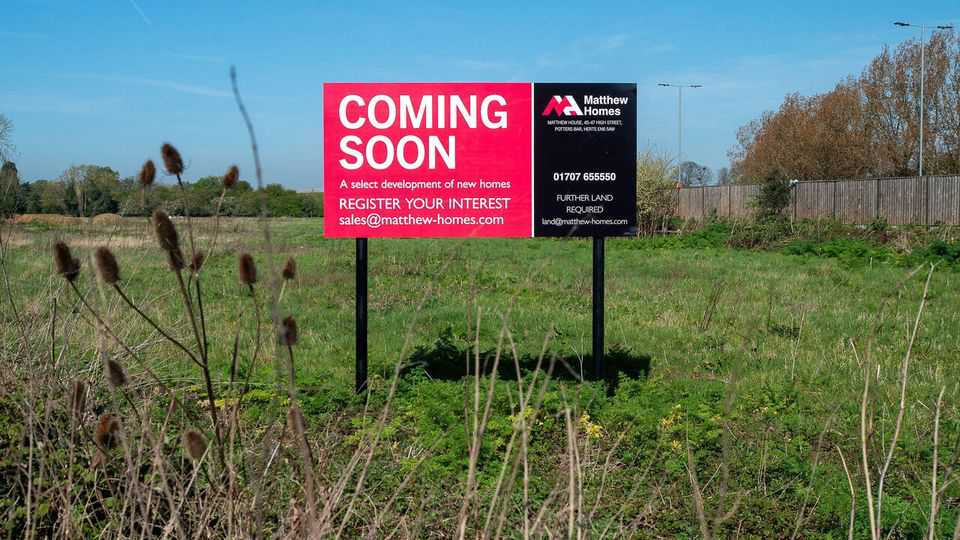

Two toots for England’s planning overhaul
A bold supply-side reform from this Labour government? Yes, really

Aug 20th 2026
KNOCKHOLT is all that is right and wrong about the Home Counties. Board the train at Charing Cross in central London, and disembark 49 minutes later in the Kentish countryside. The station inspired Edith Nesbit to write “The Railway Children”, a pastoral novel, in 1905, and the landscape has hardly changed. To the north side is a golf course; to the south, an abandoned one on which proposals to build houses have been knocked back for years. Squeeze past the brambles heavy with blackberries and nightshades; the water hazards are bone dry, and the grass on the old fairways is overgrown and coarse.
Perhaps not for long. A new planning framework, published by the government on August 17th and effective immediately, takes aim at the Knockholts: stations on busy commuter routes found across England that are surrounded by fields or only half-developed land. They may be a fine place to walk the labrador before catching the 7.58 to the City; they are also a symptom of a restrictive planning regime known around the world as a form of pigheaded economic self-harm. Taken with other recent changes, it “adds up to the most powerful, coherent and quietly revolutionary national planning policy we’ve ever had,” says Zack Simons, a barrister.
A sweeping supply-side reform might seem improbable from a government characterised by dithering and interventionism. And for years, planning reform was seen as untouchable, given the backlash of homeowners and conservationists. To its credit, Labour has grasped it, reckoning on the support of its young and urban coalition. “I did expect more of a political backlash than we have seen,” says Matthew Pennycook, the low-drama minister responsible. He succeeded by pitching the changes as “common sense”, he says. “It is very hard to dispute that we should be building around train stations.”
The boldest steps target stations outside existing settlements served by four trains an hour, in the most productive half of the country. There, it will be possible to build within “reasonable walking distance”, or 800 metres, at a density of at least 35 dwellings per hectare (dph), typical of new estates. (Where eight trains an hour run, a minimum of 45dph applies). Lichfields, a consultancy, reckons around 800 stations are in scope and the reform could release land for 535,000-570,000 homes.
It is not perfect. Rather than attempting a more liberal American-style zoning system, the government has sought to tilt the existing system—under which local authorities balance the case for building against the potential harms—more firmly in favour of development. Accordingly, a system defined by discretionary decision-making and legal appeals will persist, says Mr Simons. Nor do the new rules automatically release land designated as “green belt” near stations, points out Paul Cheshire, a land economist. And since that land will be subject to strict housing-affordability rules, many potential sites might be economically unviable, he suggests.
Mr Pennycook insists the sums add up for developers. In Knockholt, people seem resigned to more development. The golf-course development has been unpopular with some locals, says Kate Mansfield, the landlady of the Bo-Peep, a pub built in 1548, but it may also bring new patrons.
Sanjay Puri, who runs a garden-office business, says the passing traffic may bring him more trade too, even if the gardens of new homes tend to be too small for the swish outbuildings he sells. Still, “people who live in Kent like to feel that they’re separate from London,” he says, and do not want it to “become Los Angeles, where you drive for 100 miles and you’re still in the city”. Improbable as it might seem, a moment later a Spitfire thunders into view, executes a perfect barrel-roll over the golf course, and disappears behind the tree line. The land is changing; the sky will remain as Kentish as it comes. ■